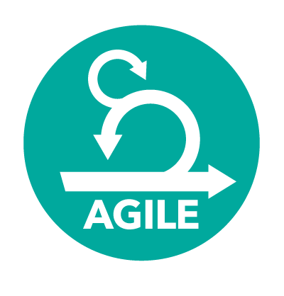
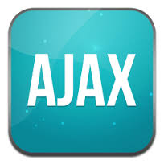

JULIET
B
R
OWN


SUMMARY:
I am a driven, and honest Junior Developer with a
previous art/design background, recently having put over one thousand hours into development training through Enspiral Dev Academy and with also four years of fine art/design training from the University of
Auckland - ELAM, Bachelor of Fine Arts.
I enjoy both leading and working within teams, as well as alone.
Having the ability and understanding to both design and building products really excites me. Technology is the way of the future, my passion is visually creating meaning that
interacts and connects emotionally with people.
I enjoy being curious and pushing the boundaries with
technology and design there are endless possibilitites, but I also having an empathetic approach to problems. I often use empathy to explore the "why" and solve the "how".
I love the continous advances in technology it creates better
ways to solving problems for the community.
I am really excited about my technology career and contributing to society as a woman. Extending my programming and art/design skill sets through learning is a high priority in order to deliver a superior quality of work and to continue to progress in both fields.
Right now, I am immersing myself with rebuilding a
personal website, learning gulp and starting a group application.
project.
SKILLS:





WORK EXPERIENCE:
DNA Design - Auckland
Work Expereince Oct - Nov 2014
DNA'S unique approach to design, user expereince, empathy and problem solving providied me with a valuable insight into
Customer Experience Design.
I shadowed the Customer Experience Design team with the BNZ ATM machine. Emphasis was placed around the customers empathy and needs in relation to the most efficient business model for BNZ.
It really excited me to transfer my studies and previous work expereince into a whole .
AWARDS/EXHIBITIONS:
ELAM - University of Auckland | 2014, selected for private colection
Corban Estate - “Realism” exhibition | 2014
Blood andBone - “design/decorating” illustrations for Hannah Whitehead.
Northland Community Arts centre - Illustration Exhibition | 2012
REFEREES:
On Request
EDUCATION:
Bachelor of Fine Arts with Honours
(University of Auckland- ELAM) - 2010 - 2014
This Degree focused on pushing the boundries on a creative an conceptual level. The final Honours year students must research and explore a particular topic and present a thesis wth a final presentation in any visual form.
For me , this was an individualised in-depth theoretical exploration of the Self/ Fine arts/ Philosophy/ and Design.Link to portfolio work below.
Out of 80 students Elam purchased one of my artworks for their private collection now displayed in the University of Auckland.
www.julietbrowncreative.com
WORK EXPEREINCE:
Junior Developer (Enspiral Dev Academy) - 2015 - Awarded Diverstity Scholarship
Junior Web Developer (Enspiral Dev Academy) - 2015 - Awarded Diverstity Scholarship
Enspiral Dev Academy is a pratical bootcamp style computer programming course where over one thousand hours
is spent learning skills in Ruby and Rails,
Javascript and Jquery, Agile, HTML5 and CSS, Git, and TDD.
Engineering Empathy are the key focus areas for soft skills and help to integrate students into a realistic working environment, learning how to work in teams in a commercial high pressure enviroment and deal with issues that might arise when working with others.
The course has a large emphasise on learning through doing. We pair from day one and every week we are finishine the week with a tem project.
Over the 18 weeks we build basic terminal apps, to full stack apps with web frame works such as rails.
This project called "Inkling" - a mind map ap for creative ideas, was an exploration project where art meets code.
I really felt passionate about this project It was a great unique learning expereince. Where I really applied and immersed myself in the unknown of creativity and technolodgy. It was a learning expereince that mentally challenged and pushed me through designing, programming, team work, and a final presentation.
I particallry worked closely with another team member with the front end development we had a quirky approach to the ap. I also disovered a new found hobbie three.js which I quickly taught myself in this last week of the project.
WORK EXPERIENCE:
APN News and Media
Credit Control - July 2011 - January 2012 - left to study fulltime
Highly measured, customer focussed and target
driven enviroment provided clear visibility of performance
and how to improve.
Required detailed knowledge of finances, and understanding of company and customer needs to ensure targets were met of debt.
I consistently met targets and often exceeded expectations in relation to personal effort required. Often worked longer hours to ensure that all tasks were completed.
Whitianga Community Sevices Trust
Alternative Educaion Facilatator - Jan 2007 - July
2011
As a Community Centre Leader, I facilitated
"Creative Learning Scheme’s" for Alternative Education. Students who have been disengaged from education for a variety of reasons who now had the opportunity to flourish, develop confidence and grow in a smaller learning environment. I budgeted, planned and coordinated programs and activities to ensure that the children’s needs were met effectively.
I formed strong relationships and made a difference to these challenging students which lead them back positively to the high school education system. I always needed to maintain a clear thinking approach, strong decision making skills ,
creative and analytical outlook.
PASSION/PERSONAL INTERESTS:
I am highly passionate about Programming/Art and Design, in both a commercial and personal context, with the
possibilities at the intersection of the two areas being something that particularly really excites me.
I am also an emerging artist in my own time who exhibits as frequently as I can.
I always enjoy learning and being pushed to the limit in sport, philosophy, art ,design or coding.